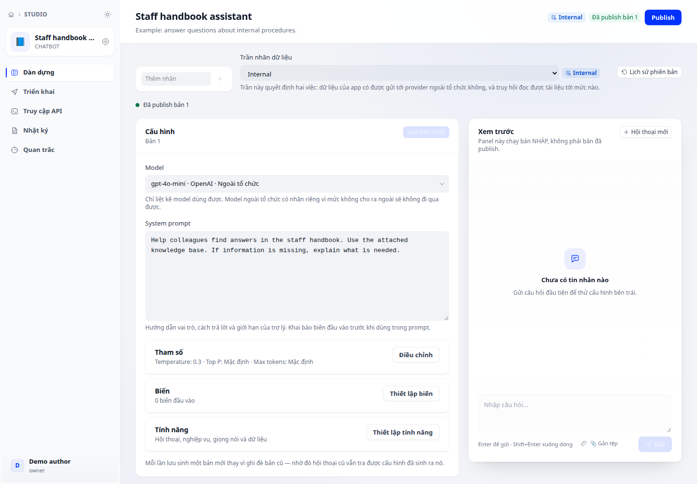
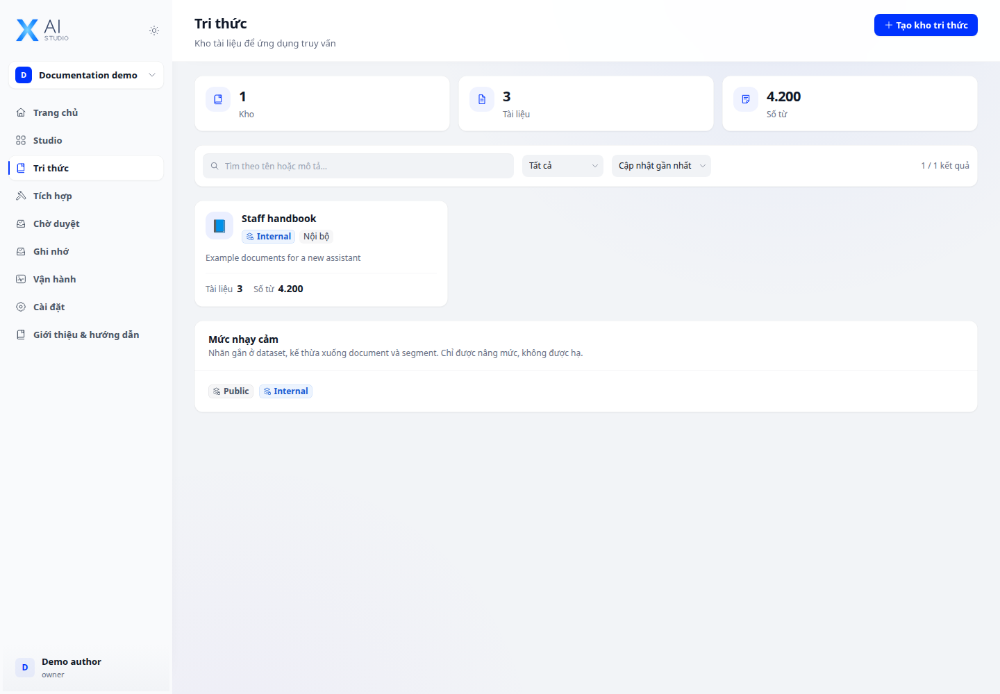
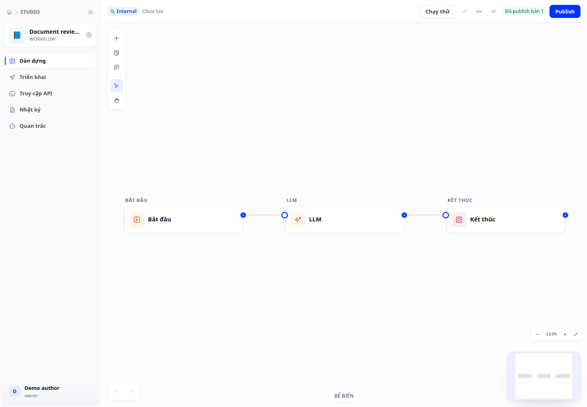

01Ứng dụng AI

XDev AI Studio
Kết nối mô hình, tri thức và công cụ để xây trợ lý AI và workflow phục vụ công việc.
Khám phá AI Studio
Ý tưởng độc lập. Sản phẩm thực tế.
Mình là Duy. Mình xây phần mềm, khám phá AI và chia sẻ những điều học được trên hành trình biến ý tưởng thành sản phẩm.
xDev / Sản phẩm
Xây ứng dụng AI, điều phối vòng đời phát triển phần mềm, vẽ sơ đồ ý tưởng và in từ ứng dụng web. Khám phá các sản phẩm xDev theo công việc bạn cần giải quyết.
Kết nối mô hình, tri thức và công cụ để xây trợ lý AI và workflow phục vụ công việc.
Khám phá AI Studio
Kết nối team, coding agent và repo: điều phối task, theo dõi lượt chạy, review và tích lũy bài học.
Khám phá HiveStudio sơ đồ AI native cho Mac, iPhone và iPad: sơ đồ tư duy, lưu đồ và sơ đồ kiến trúc với các góc nhìn C4, triển khai và trình tự, AI chạy trên máy, không thu thập dữ liệu.
Khám phá xDraft
Tiện ích Chrome và SDK TypeScript giúp ứng dụng web in đơn thuốc, hoá đơn, tem nhãn đúng máy in đã gán cho từng loại chứng từ, không cần backend.
Khám phá Browser PrintĐang xây dựng
Từ tri thức nội bộ đến ứng dụng vận hành được. AI Studio kết nối dữ liệu, mô hình và công cụ trong một không gian làm việc.



Điều phối vòng đời phát triển phần mềm cùng AI
xDev Hive kết nối team, coding agent và repo trong một quy trình: nhận task, xây dựng, review và đưa bài học trở lại công việc tiếp theo.
Claude Code, Codex, Gemini CLI và các coding agent kết nối qua MCP. Dùng hub web cho cả team, hoặc app desktop ngay trên máy của bạn.
Khám phá xDev HiveTask rõ ràng, ngữ cảnh đúng, lượt chạy theo dõi được.
Kết nối kết quả với repo, PR/MR và người duyệt.
Giữ lại quyết định, memory và skill cho vòng tiếp theo.
Người đứng sau xDev
Mình thích cảm giác biến một ý tưởng thành thứ có thể dùng được. Một công cụ giải quyết công việc nhỏ. Một hệ thống kết nối những điều phức tạp. Hay một ứng dụng giúp AI trở nên hữu ích hơn.
xDev là nơi mình xây những thứ đó — và ghi lại cả những điều học được trong quá trình làm.
Ghi chép từ thực tế
Những điều đáng giữ lại sau mỗi lần thử.
Ý tưởng tiếp theo đang ở phía trước.